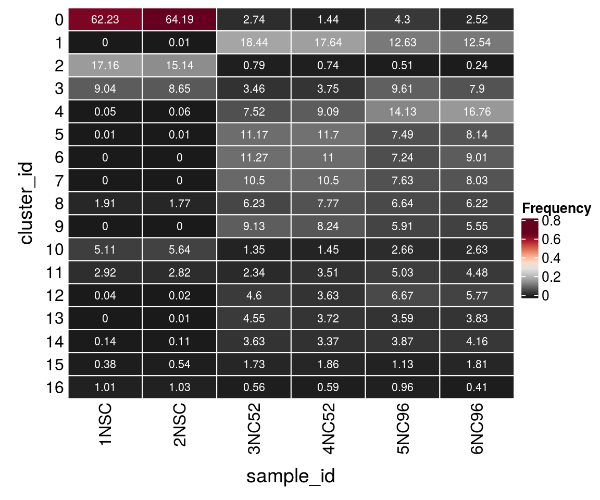
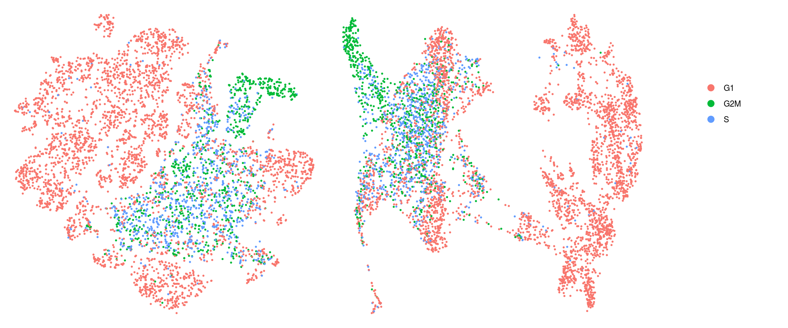
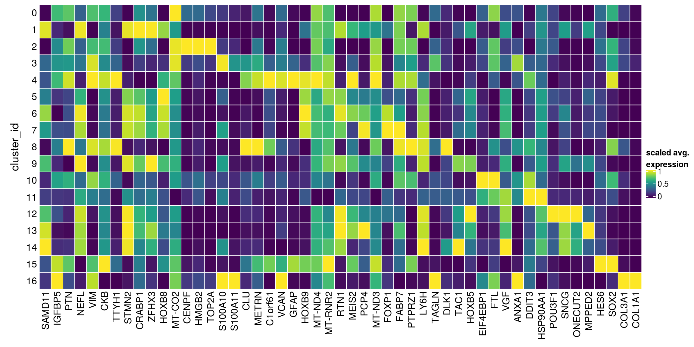

Cluster annotation
Katharina Hembach
5/29/2020
Last updated: 2020-06-10
Checks: 6 1
Knit directory: neural_scRNAseq/
This reproducible R Markdown analysis was created with workflowr (version 1.6.2). The Checks tab describes the reproducibility checks that were applied when the results were created. The Past versions tab lists the development history.
Great! Since the R Markdown file has been committed to the Git repository, you know the exact version of the code that produced these results.
Great job! The global environment was empty. Objects defined in the global environment can affect the analysis in your R Markdown file in unknown ways. For reproduciblity it’s best to always run the code in an empty environment.
The command set.seed(20200522) was run prior to running the code in the R Markdown file. Setting a seed ensures that any results that rely on randomness, e.g. subsampling or permutations, are reproducible.
Great job! Recording the operating system, R version, and package versions is critical for reproducibility.
- dim-red
- load-data
- load-libs
- scran-findMarkers
- scran-markers-heatmap
- session-info-chunk-inserted-by-workflowr
- unnamed-chunk-1
- unnamed-chunk-2
- unnamed-chunk-3
To ensure reproducibility of the results, delete the cache directory 05-annotation_cache and re-run the analysis. To have workflowr automatically delete the cache directory prior to building the file, set delete_cache = TRUE when running wflow_build() or wflow_publish().
Great job! Using relative paths to the files within your workflowr project makes it easier to run your code on other machines.
Great! You are using Git for version control. Tracking code development and connecting the code version to the results is critical for reproducibility.
The results in this page were generated with repository version b6767a6. See the Past versions tab to see a history of the changes made to the R Markdown and HTML files.
Note that you need to be careful to ensure that all relevant files for the analysis have been committed to Git prior to generating the results (you can use wflow_publish or wflow_git_commit). workflowr only checks the R Markdown file, but you know if there are other scripts or data files that it depends on. Below is the status of the Git repository when the results were generated:
Ignored files:
Ignored: .DS_Store
Ignored: .Rhistory
Ignored: .Rproj.user/
Ignored: ._.DS_Store
Ignored: .__workflowr.yml
Ignored: ._neural_scRNAseq.Rproj
Ignored: analysis/.DS_Store
Ignored: analysis/.Rhistory
Ignored: analysis/._.DS_Store
Ignored: analysis/._01-preprocessing.Rmd
Ignored: analysis/._01-preprocessing.html
Ignored: analysis/._02.1-SampleQC.Rmd
Ignored: analysis/._04-clustering.Rmd
Ignored: analysis/._04-clustering.knit.md
Ignored: analysis/.__site.yml
Ignored: analysis/01-preprocessing_cache/
Ignored: analysis/02-1-SampleQC_cache/
Ignored: analysis/02-quality_control_cache/
Ignored: analysis/02.1-SampleQC_cache/
Ignored: analysis/03-filtering_cache/
Ignored: analysis/04-clustering_cache/
Ignored: analysis/05-annotation_cache/
Ignored: analysis/sample5_QC_cache/
Ignored: data/.DS_Store
Ignored: data/._.DS_Store
Ignored: data/._metadata.csv
Ignored: data/._metadata.xlsx
Ignored: data/.smbdeleteAAA17ed8b4b
Ignored: data/data_sushi/
Ignored: data/filtered_feature_matrices/
Ignored: data/metadata.csv
Ignored: data/metadata.xlsx
Ignored: output/.DS_Store
Ignored: output/._.DS_Store
Ignored: output/figures/
Ignored: output/sce_01_preprocessing.rds
Ignored: output/sce_02_quality_control.rds
Ignored: output/sce_03_filtering.rds
Ignored: output/sce_preprocessing.rds
Ignored: output/so_04_clustering.rds
Untracked files:
Untracked: analysis/sample5_QC.Rmd
Untracked: scripts/
Unstaged changes:
Modified: analysis/_site.yml
Note that any generated files, e.g. HTML, png, CSS, etc., are not included in this status report because it is ok for generated content to have uncommitted changes.
These are the previous versions of the repository in which changes were made to the R Markdown (analysis/05-annotation.Rmd) and HTML (docs/05-annotation.html) files. If you’ve configured a remote Git repository (see ?wflow_git_remote), click on the hyperlinks in the table below to view the files as they were in that past version.
| File | Version | Author | Date | Message |
|---|---|---|---|---|
| Rmd | b6767a6 | khembach | 2020-06-10 | wflow_publish(“analysis/05-annotation.Rmd”, verbose = TRUE) |
| html | 419ac73 | khembach | 2020-06-09 | Build site. |
| html | a4d0e04 | khembach | 2020-05-29 | Build site. |
| Rmd | 97d5a52 | khembach | 2020-05-29 | cluster analysis |
Load packages
library(ComplexHeatmap)
library(cowplot)
library(ggplot2)
library(dplyr)
library(muscat)
library(purrr)
library(RColorBrewer)
library(viridis)
library(scran)
library(Seurat)
library(SingleCellExperiment)
library(stringr)Load data & convert to SCE
so <- readRDS(file.path("output", "so_04_clustering.rds"))
sce <- as.SingleCellExperiment(so, assay = "RNA")
colData(sce) <- as.data.frame(colData(sce)) %>%
mutate_if(is.character, as.factor) %>%
DataFrame(row.names = colnames(sce))Nb. of clusters by resolution
cluster_cols <- grep("res.[0-9]", colnames(colData(sce)), value = TRUE)
sapply(colData(sce)[cluster_cols], nlevels)integrated_snn_res.0.1 integrated_snn_res.0.2 integrated_snn_res.0.4
8 12 17
integrated_snn_res.0.8 integrated_snn_res.1 integrated_snn_res.1.2
24 29 31
integrated_snn_res.2
39 Cluster-sample counts
# set cluster IDs to resolution 0.4 clustering
so <- SetIdent(so, value = "integrated_snn_res.0.4")
so@meta.data$cluster_id <- Idents(so)
sce$cluster_id <- Idents(so)
(n_cells <- table(sce$cluster_id, sce$sample_id))
1NSC 2NSC 3NC52 4NC52 5NC96 6NC96
0 4850 5041 186 98 308 82
1 0 0 1552 1279 492 627
2 1037 1011 337 288 563 391
3 12 10 572 383 1806 372
4 1351 1221 69 56 76 16
5 0 0 1017 847 380 415
6 2 9 628 620 528 774
7 253 236 577 606 376 369
8 0 0 1007 867 250 285
9 0 0 924 764 327 379
10 688 716 130 121 188 119
11 3 3 582 524 211 248
12 0 0 365 281 186 235
13 0 0 339 247 141 174
14 1 1 205 260 210 194
15 51 70 148 153 64 89
16 83 90 49 44 83 24Relative cluster-abundances
fqs <- prop.table(n_cells, margin = 2)
mat <- as.matrix(unclass(fqs))
Heatmap(mat,
col = rev(brewer.pal(11, "RdGy")[-6]),
name = "Frequency",
cluster_rows = FALSE,
cluster_columns = FALSE,
row_names_side = "left",
row_title = "cluster_id",
column_title = "sample_id",
column_title_side = "bottom",
rect_gp = gpar(col = "white"),
cell_fun = function(i, j, x, y, width, height, fill)
grid.text(round(mat[j, i] * 100, 2), x = x, y = y,
gp = gpar(col = "white", fontsize = 8)))
| Version | Author | Date |
|---|---|---|
| a4d0e04 | khembach | 2020-05-29 |
Cell cycle
We assign each cell a cell cycle scores and visualize them in the DR plots. We use known G2/M and S phase markers that come with the Seurat package. The markers are anticorrelated and cells that to not express the markers are supposed to be in G1 phase.
# A list of cell cycle markers, from Tirosh et al, 2015, is loaded with Seurat. We can
# segregate this list into markers of G2/M phase and markers of S phase
(s_genes <- cc.genes$s.genes) [1] "MCM5" "PCNA" "TYMS" "FEN1" "MCM2" "MCM4"
[7] "RRM1" "UNG" "GINS2" "MCM6" "CDCA7" "DTL"
[13] "PRIM1" "UHRF1" "MLF1IP" "HELLS" "RFC2" "RPA2"
[19] "NASP" "RAD51AP1" "GMNN" "WDR76" "SLBP" "CCNE2"
[25] "UBR7" "POLD3" "MSH2" "ATAD2" "RAD51" "RRM2"
[31] "CDC45" "CDC6" "EXO1" "TIPIN" "DSCC1" "BLM"
[37] "CASP8AP2" "USP1" "CLSPN" "POLA1" "CHAF1B" "BRIP1"
[43] "E2F8" (g2m_genes <- cc.genes$g2m.genes) [1] "HMGB2" "CDK1" "NUSAP1" "UBE2C" "BIRC5" "TPX2" "TOP2A"
[8] "NDC80" "CKS2" "NUF2" "CKS1B" "MKI67" "TMPO" "CENPF"
[15] "TACC3" "FAM64A" "SMC4" "CCNB2" "CKAP2L" "CKAP2" "AURKB"
[22] "BUB1" "KIF11" "ANP32E" "TUBB4B" "GTSE1" "KIF20B" "HJURP"
[29] "CDCA3" "HN1" "CDC20" "TTK" "CDC25C" "KIF2C" "RANGAP1"
[36] "NCAPD2" "DLGAP5" "CDCA2" "CDCA8" "ECT2" "KIF23" "HMMR"
[43] "AURKA" "PSRC1" "ANLN" "LBR" "CKAP5" "CENPE" "CTCF"
[50] "NEK2" "G2E3" "GAS2L3" "CBX5" "CENPA" # match the marker genes to the features
m <- match(s_genes, str_split(rownames(GetAssayData(so, assay = "RNA")),
pattern = "\\.", simplify = TRUE)[,2])
s_genes <- rownames(GetAssayData(so, assay = "RNA"))[m]
s_genes <- s_genes[!is.na(s_genes)]
m <- match(g2m_genes, str_split(rownames(GetAssayData(so, assay = "RNA")),
pattern = "\\.", simplify = TRUE)[,2])
g2m_genes <- rownames(GetAssayData(so, assay = "RNA"))[m]
g2m_genes <- g2m_genes[!is.na(g2m_genes)]
# change the default assay to the raw counts
DefaultAssay(so) <- "RNA"
so <- CellCycleScoring(so, s.features = s_genes, g2m.features = g2m_genes,
set.ident = TRUE)
# change back to integrated
DefaultAssay(so) <- "integrated"DR colored by cluster ID
cs <- sample(colnames(so), 5e3)
.plot_dr <- function(so, dr, id)
DimPlot(so, cells = cs, group.by = id, reduction = dr, pt.size = 0.4) +
guides(col = guide_legend(nrow = 11,
override.aes = list(size = 3, alpha = 1))) +
theme_void() + theme(aspect.ratio = 1)
ids <- c("cluster_id", "group_id", "sample_id", "Phase")
for (id in ids) {
cat("## ", id, "\n")
p1 <- .plot_dr(so, "tsne", id)
lgd <- get_legend(p1)
p1 <- p1 + theme(legend.position = "none")
p2 <- .plot_dr(so, "umap", id) + theme(legend.position = "none")
ps <- plot_grid(plotlist = list(p1, p2), nrow = 1)
p <- plot_grid(ps, lgd, nrow = 1, rel_widths = c(1, 0.2))
print(p)
cat("\n\n")
}
Phase

Find markers using scran
We identify candidate marker genes for each cluster that enable a separation of that group from all other groups.
scran_markers <- findMarkers(sce,
groups = sce$cluster_id, block = sce$sample_id,
direction = "up", lfc = 2, full.stats = TRUE)Heatmap of mean marker-exprs. by cluster
We aggregate the cells to pseudobulks and plot the average expression of the condidate marker genes in each of the clusters.
gs <- lapply(scran_markers, function(u) rownames(u)[u$Top == 1])
## candidate cluster markers
lapply(gs, function(x) str_split(x, pattern = "\\.", simplify = TRUE)[,2])$`0`
[1] "SAMD11" "NEFL" "VIM" "CKB" "TTYH1"
$`1`
[1] "SAMD11" "STMN2" "CRABP1" "ZFHX3" "HOXB8" "MT-CO2"
$`2`
[1] "S100A10" "S100A11" "CLU" "VIM" "TAGLN" "CKB" "TPM1"
$`3`
[1] "SAMD11" "STMN2" "SNCG" "RTN1" "HOXB5" "ONECUT2" "PCP4"
[8] "MT-CO2"
$`4`
[1] "HMGB2" "VIM" "CKB" "TOP2A"
$`5`
[1] "STMN2" "RTN1" "MEIS2" "HOXB9" "PCP4" "MT-ND3"
$`6`
[1] "C1orf61" "SPP1" "FABP5" "VIM" "HOXB9" "TTYH1" "MT-ND4"
$`7`
[1] "CLU" "LY6H" "VIM" "TAGLN" "DLK1" "CKB" "METRN"
$`8`
[1] "SAMD11" "TAC1" "STMN2" "ZFHX3" "HOXB8" "LAMP5" "MT-CO2"
$`9`
[1] "SAMD11" "FOXP1" "STMN2" "PCP4"
$`10`
[1] "SAMD11" "VGF" "EIF4EBP1" "ANXA1" "VIM" "CKB" "FTL"
$`11`
[1] "ENC1" "STMN2" "NFIB" "HOXB8" "HOXB9" "MT-RNR2"
$`12`
[1] "TAC1" "STMN2"
$`13`
[1] "STMN2" "SNCG" "MPPED2" "PCP4"
$`14`
[1] "STMN2" "DDIT3"
$`15`
[1] "C1orf61" "HES6" "SOX2" "VIM" "CKB"
$`16`
[1] "S100A11" "COL3A1" "COL1A1" sub <- sce[unique(unlist(gs)), ]
pbs <- aggregateData(sub, assay = "logcounts", by = "cluster_id", fun = "mean")
mat <- t(muscat:::.scale(assay(pbs)))
## remove the Ensembl ID from the gene names
colnames(mat) <- str_split(colnames(mat), pattern = "\\.", simplify = TRUE)[,2]
Heatmap(mat,
name = "scaled avg.\nexpression",
col = viridis(10),
cluster_rows = FALSE,
cluster_columns = FALSE,
row_names_side = "left",
row_title = "cluster_id",
rect_gp = gpar(col = "white"))
sessionInfo()R version 4.0.0 (2020-04-24)
Platform: x86_64-pc-linux-gnu (64-bit)
Running under: Ubuntu 16.04.6 LTS
Matrix products: default
BLAS: /usr/local/R/R-4.0.0/lib/libRblas.so
LAPACK: /usr/local/R/R-4.0.0/lib/libRlapack.so
locale:
[1] LC_CTYPE=en_US.UTF-8 LC_NUMERIC=C
[3] LC_TIME=en_US.UTF-8 LC_COLLATE=en_US.UTF-8
[5] LC_MONETARY=en_US.UTF-8 LC_MESSAGES=en_US.UTF-8
[7] LC_PAPER=en_US.UTF-8 LC_NAME=C
[9] LC_ADDRESS=C LC_TELEPHONE=C
[11] LC_MEASUREMENT=en_US.UTF-8 LC_IDENTIFICATION=C
attached base packages:
[1] parallel stats4 grid stats graphics grDevices utils
[8] datasets methods base
other attached packages:
[1] Seurat_3.1.5 scran_1.16.0
[3] SingleCellExperiment_1.10.1 SummarizedExperiment_1.18.1
[5] DelayedArray_0.14.0 matrixStats_0.56.0
[7] Biobase_2.48.0 GenomicRanges_1.40.0
[9] GenomeInfoDb_1.24.0 IRanges_2.22.2
[11] S4Vectors_0.26.1 BiocGenerics_0.34.0
[13] viridis_0.5.1 viridisLite_0.3.0
[15] RColorBrewer_1.1-2 purrr_0.3.4
[17] muscat_1.2.0 dplyr_0.8.5
[19] ggplot2_3.3.0 cowplot_1.0.0
[21] ComplexHeatmap_2.4.2 workflowr_1.6.2
loaded via a namespace (and not attached):
[1] backports_1.1.7 circlize_0.4.9
[3] blme_1.0-4 igraph_1.2.5
[5] plyr_1.8.6 lazyeval_0.2.2
[7] TMB_1.7.16 splines_4.0.0
[9] BiocParallel_1.22.0 listenv_0.8.0
[11] scater_1.16.0 digest_0.6.25
[13] foreach_1.5.0 htmltools_0.4.0
[15] gdata_2.18.0 lmerTest_3.1-2
[17] magrittr_1.5 memoise_1.1.0
[19] cluster_2.1.0 doParallel_1.0.15
[21] ROCR_1.0-11 limma_3.44.1
[23] globals_0.12.5 annotate_1.66.0
[25] prettyunits_1.1.1 colorspace_1.4-1
[27] rappdirs_0.3.1 ggrepel_0.8.2
[29] blob_1.2.1 xfun_0.14
[31] jsonlite_1.6.1 crayon_1.3.4
[33] RCurl_1.98-1.2 genefilter_1.70.0
[35] lme4_1.1-23 zoo_1.8-8
[37] ape_5.3 survival_3.1-12
[39] iterators_1.0.12 glue_1.4.1
[41] gtable_0.3.0 zlibbioc_1.34.0
[43] XVector_0.28.0 leiden_0.3.3
[45] GetoptLong_0.1.8 BiocSingular_1.4.0
[47] future.apply_1.5.0 shape_1.4.4
[49] scales_1.1.1 DBI_1.1.0
[51] edgeR_3.30.0 Rcpp_1.0.4.6
[53] xtable_1.8-4 progress_1.2.2
[55] clue_0.3-57 reticulate_1.16
[57] dqrng_0.2.1 bit_1.1-15.2
[59] rsvd_1.0.3 tsne_0.1-3
[61] htmlwidgets_1.5.1 httr_1.4.1
[63] gplots_3.0.3 ellipsis_0.3.1
[65] ica_1.0-2 farver_2.0.3
[67] pkgconfig_2.0.3 XML_3.99-0.3
[69] uwot_0.1.8 locfit_1.5-9.4
[71] labeling_0.3 tidyselect_1.1.0
[73] rlang_0.4.6 reshape2_1.4.4
[75] later_1.0.0 AnnotationDbi_1.50.0
[77] munsell_0.5.0 tools_4.0.0
[79] RSQLite_2.2.0 ggridges_0.5.2
[81] evaluate_0.14 stringr_1.4.0
[83] yaml_2.2.1 knitr_1.28
[85] bit64_0.9-7 fs_1.4.1
[87] fitdistrplus_1.1-1 caTools_1.18.0
[89] RANN_2.6.1 pbapply_1.4-2
[91] future_1.17.0 nlme_3.1-148
[93] whisker_0.4 pbkrtest_0.4-8.6
[95] compiler_4.0.0 plotly_4.9.2.1
[97] beeswarm_0.2.3 png_0.1-7
[99] variancePartition_1.18.0 tibble_3.0.1
[101] statmod_1.4.34 geneplotter_1.66.0
[103] stringi_1.4.6 lattice_0.20-41
[105] Matrix_1.2-18 nloptr_1.2.2.1
[107] vctrs_0.3.0 pillar_1.4.4
[109] lifecycle_0.2.0 lmtest_0.9-37
[111] GlobalOptions_0.1.1 RcppAnnoy_0.0.16
[113] BiocNeighbors_1.6.0 data.table_1.12.8
[115] bitops_1.0-6 irlba_2.3.3
[117] patchwork_1.0.0 httpuv_1.5.2
[119] colorRamps_2.3 R6_2.4.1
[121] promises_1.1.0 KernSmooth_2.23-17
[123] gridExtra_2.3 vipor_0.4.5
[125] codetools_0.2-16 boot_1.3-25
[127] MASS_7.3-51.6 gtools_3.8.2
[129] assertthat_0.2.1 DESeq2_1.28.1
[131] rprojroot_1.3-2 rjson_0.2.20
[133] withr_2.2.0 sctransform_0.2.1
[135] GenomeInfoDbData_1.2.3 hms_0.5.3
[137] tidyr_1.1.0 glmmTMB_1.0.1
[139] minqa_1.2.4 rmarkdown_2.1
[141] DelayedMatrixStats_1.10.0 Rtsne_0.15
[143] git2r_0.27.1 numDeriv_2016.8-1.1
[145] ggbeeswarm_0.6.0